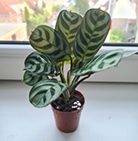

In mijn vrije tijd vind ik het leuk om mij bezig te houden met het groeien en
onderhouden van huisplanten.

Daarnaast fotografeer ik ook graag als ik de kans
heb om wandelingen te maken in steden of bossen of tijdens vakanties.
De laatste paar jaar heb ik ook flink mijn Engels kunnen ontwikkelen met hulp
van mijn Engels sprekende partner die hier nu met mij in Nederland woont.
Daarvoor heb ik ook een cursus van Cambridge Advanced English mogen
volgen en ik ben uiteindelijk geslaagd met een certificaat op C1 niveau.
Verder vind ik het ook leuk om online nieuwe mensen te leren kennen
bijvoorbeeld tijdens het spelen van video games. Op deze manier heb ik zelfs
een paar van mijn huidige goede vrienden gevonden.